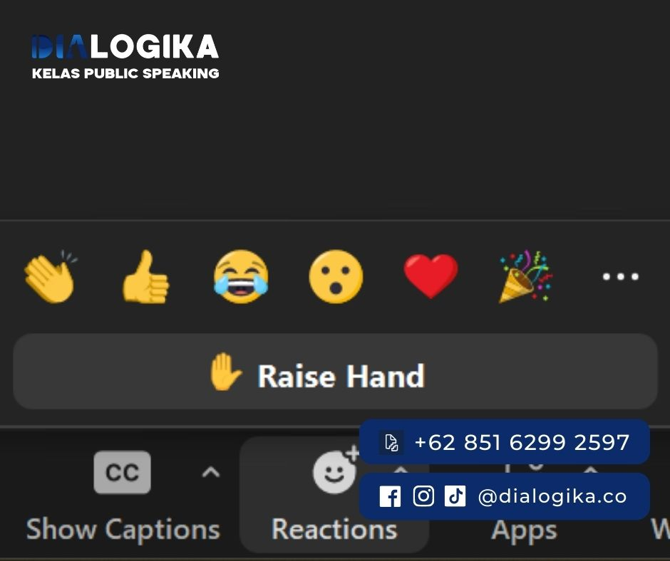
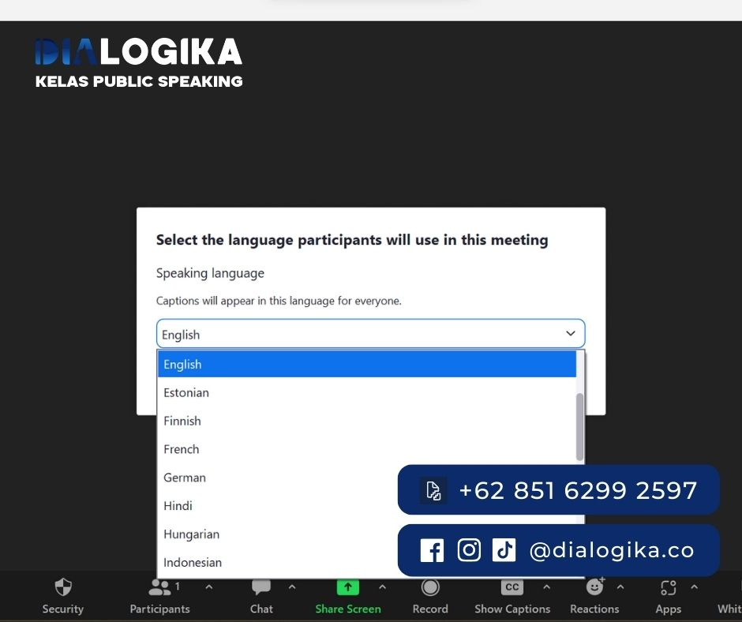

Cara Presentasi Yang Baik di Zoom: Fitur Zoom Jarang Digunakan?
Cara Presentasi yang Baik di Zoom - - Perubahan norma di era digital telah begitu besar dan cepat, seolah-olah kita dipaksa untuk beradaptasi dalam hitungan hari, bukan tahun. Terutama sejak pandemi COVID-19 melanda, kehidupan kita berubah drastis. Kita beralih dari pertemuan tatap muka ke pertemuan online, dari kantor dan kelas ke ruang kerja dan belajar di rumah. Zoom, sebagai salah satu platform pertemuan online terkemuka, telah menjadi bagian tak terpisahkan dari kehidupan kita sehari-hari.
Dalam waktu singkat, kita harus belajar bagaimana melakukan presentasi yang efektif melalui layar komputer atau telepon, mengubah cara kita berkomunikasi, dan menyesuaikan diri dengan norma baru ini. Peralihan ke era digital bukanlah pilihan lagi, tetapi sebuah keharusan yang harus kita hadapi.
Perubahan norma yang terjadi telah membuat banyak orang masih kesulitan untuk memahami konsep pertemuan Zoom yang baik. Kebanyakan, hal ini disebabkan oleh ketidakakraban mereka dengan aplikasi tersebut yang berakibat pada pertemuan yang panjang dan monoton, yang tentunya telah menjadi kenangan buruk bagi banyak orang dalam beberapa tahun terakhir.
Seperti halnya apa pun di dunia ini, pertemuan Zoom memiliki kelebihannya sendiri, yakni telah membuka jalan menuju bentuk komunikasi yang lebih efisien. Fakta bahwa pertemuan Zoom dapat diadakan di mana saja dan kompatibel di setiap perangkat adalah hal yang menjadikan Zoom sangat menguntungkan bagi dunia modern kita.
"Kita tidak bisa merubah arah angin, tapi kita bisa menyesuaikan layar kapal kita. Era digital adalah angin baru kita, dan kemampuan untuk beradaptasi adalah layar kita."
Satya Nadella, CEO Microsoft.
Meskipun begitu, hal tersebut tidak mengubah opini bahwa Zoom seolah-olah mengurangi pengalaman sebuah presentasi. Opini ini benar-benar berasal dari ketidakmampuan dan kurangnya pemahaman tentang aplikasi tersebut. Yang paling sulit bagi kebanyakan orang bukanlah Zoom itu sendiri, tetapi bagaimana mengintegrasikan presentasi mereka di Zoom.
Beberapa pembicara mungkin profesional di atas panggung, tetapi ketika berada di depan layar, aturannya sedikit berubah dan seringkali bisa membuat mereka keluar dari alur mereka. Jadi, apa cara presentasi yang baik di Zoom?
7 Poin Yang Meningkatkan Profesionalitas Presentasi
1. Periksa Lokasi, Koneksi dan Aplikasi
-
Lokasi
Saat melakukan aktivitas zoom, penentuan lokasi sangat penting. Menemukan tempat yang tenang dan bebas dari gangguan eksternal menentukan suasana hati dalam melakukan presentasi dengan optimis dan optimal.
-
Koneksi
Selain lokasi, koneksi juga harus dipertimbangkan. Saat melakukan presentasi atau pertemuan tentunya kita tidak ingin mengalami lag yang mengganggu presentasi dihadapan audiens, karena itu akan mengurangi profesionalitas dalam menyampaikan informasi.
-
Aplikasi
Ketika kita bicara tentang aplikasi, pertimbangkan jenis Zoom apa yang miliki. Tidak semua dari kita adalah pengguna premium sehingga kita harus menyesuaikan penyampaian materi untuk mengakomodasi tipe zoom yang dimiliki. Hal ini sangat penting jika menggunakan fitur-fitur tertentu seperti break rooms dalam presentasimu, jadi pastikan untuk memeriksa dan memahami sumber daya apa yang miliki.
2. Jangan Sembunyi Di Balik Layar
Hal yang biasa dilakukan dalam presentasi zoom adalah terlalu lama dalam melakukan penyampaian dan penyampaian yang dilakukan hanya biasa dan monoton. Hal tersebut akan membuat audiens merasa malas dan tidak memperhatikan penyampaian.
Ketika audiens merasa malas, mereka akan secara sadar melakukan aksi untuk klik tombol ‘Close video’. Salah satu cara untuk menarik perhatian audiens adalah dengan menunjukkan diri, sering-seringlah beralih pada kamera dan bukan terpatok dengan slide terus menerus
3. Persiapkan Desain PPT Yang Menarik Untuk Semua Orang
Sebenarnya apa yang pertama diperhatikan audiens dalam presentasi Zoom? Powerpoint. Jika dalam melakukan presentasi dengan menggunakan powerpoint atau media presentasi lainnya seperti poster, maka ada beberapa hal yang harus diwaspadai.
Catat! ingatlah bahwa audiens kemungkinan besar berada di tempat yang berbeda dan mendengarkan dari perangkat yang berbeda. Karena adanya perbedaan, persiapkanlah presentasi yang dapat cocok untuk semua orang.
Contohnya adalah dengan memberikan teks yang mudah dibaca dari ponsel atau PC dan bahkan desain yang enak dipandang. Selain dari format powerpoint, pertimbangkan kecepatan dalam penyampaian, sehingga memungkinkan audiens untuk tetap mengikuti penjelasan.
4. Atur "Flow" Presentasi
Meskipun presentasi dilakukan di waktu istirahat ataupun situasi yang tidak biasa, sebagai seorang pembicara harus tetap menjaga kualitas public speaking. Seperti kontak mata, pertanyaan, intonasi dan bahkan bahasa tubuh walaupun hanya berada dalam presentasi virtual.
Poin yang sering dilewatkan orang dengan presentasi virtual adalah akomodasi powerpoint atau media yang dipakai. Pelajari slide yang sedang ditayangkan dengan baik, sehingga jika terdapat slide yang berisi pertanyaan kita sebagai pembicara dapat memberikan waktu untuk audiens untuk menyerap apa yang disampaikan dalam slide. Ini adalah cara efektif untuk memberikan jeda bagi orang untuk memahami informasi yang diberikan.
5. Siapkan Media Pendukung Presentasi
Jika dalam presentasi membutuhkan untuk membuka aplikasi atau website, persiapkan hal tersebut sebelum presentasi dimulai agar audiens menilai pembicara membawakan materi secara profesional.
6. Perhatikan Chat Box
Ruangan obrolan adalah fitur penting dalam setiap presentasi Zoom. Ketika semua peserta dibisukan, satu-satunya cara komunikasi dan umpan balik adalah melalui obrolan. Orang biasanya mengajukan pertanyaan atau mengutarakan pendapat tertentu melalui chat box dalam zoom.
Dengan menggunakan fitur chat box inilah yang memberikan interaksi menarik dengan audiens dengan efektif dan sebagai pembicara kita dapat memantau suasana hati audiens sesuai dengan apa yang dituliskan atau reaksi yang diberikan audiens terhadap pembicaraan saat presentasi berlangsung.
7. Manfaatkan Fitur Zoom
Zoom memiliki berbagai fitur yang menarik dan sangat membantu yang dapat digunakan saat melakukan presentasi. Fitur ini dapat mengoptimalkan interaksi dalam zoom dan menciptakan peluang untuk menarik perhatian audiens kita. Misalnya, ketika dalam menyapa audiens dan menanyakan suasana hati audiens pada hari ini, audiens dapat menggunakan icon reactions.
-
Fitur Zoom Dapat Mendukung Profesionalitas dalam Presentasi
a. Menunjuk Co-Host
Dalam rapat Zoom, host dapat menunjuk seseorang sebagai co-host untuk membantu mengelola peserta rapat. Untuk melakukannya, klik pada nama peserta, kemudian pilih 'More' dan 'Make Co-Host'.
b. Menonaktifkan Fitur untuk Peserta
Sebagai host, kita bisa menonaktifkan fitur tertentu untuk peserta. Misalnya, mematikan akses peserta untuk open mic. Untuk melakukannya, pergi ke 'Security' di bagian bawah layar dan centang atau hilangkan centang pada fitur yang diinginkan.
c. Merekam
Host dapat merekam rapat Zoom Anda untuk melihat kembali nanti. Tekan tombol 'Record' di bagian bawah layar dan pilih 'Record on this Computer' atau 'Record to the Cloud', tergantung pada kebutuhan Anda.
d. Anotasi
Fitur Anotasi memungkinkan host dan peserta untuk menambahkan informasi ke layar selama screen sharing. Untuk mengaktifkannya, klik 'Share Screen', lalu pilih 'Whiteboard' atau dokumen yang ingin bagikan, dan klik 'Annotate' di toolbar.
e. Polling Langsung
Dapat membuat polling untuk mendapatkan feedback instan dari peserta. Untuk melakukannya, klik 'Polls' di bawah layar, kemudian 'Add', dan buat pertanyaan.
f. Reaksi

Peserta bisa memberikan reaksi selama rapat dengan mengklik 'Reactions' di bagian bawah layar dan memilih emotikon yang mereka inginkan.
g. Breakrooms
Sebagai host, kita dapat membuat ruang pecah untuk membagi peserta menjadi grup-grup kecil. Klik 'Breakout Rooms', tentukan jumlah ruangan dan peserta per ruangan, dan klik 'Create Rooms'.
h. Live Streaming
Host dapat melakukan siaran rapat Zoom langsung ke platform seperti YouTube atau Facebook. Klik 'More' di bagian bawah layar dan pilih 'Live on' dan platform yang Anda inginkan.
i. Aktifkan Fitur Caption

-
Host
Aktifkan fitur Caption Tertutup di setelan akun Zoom. Untuk melakukannya, masuk ke akun Zoom melalui browser web, klik pada "Settings" di menu sebelah kiri, cari "In Meeting (Advanced)" dan aktifkan opsi "Closed captioning".
Saat Anda memulai rapat, Anda akan melihat opsi "Closed Caption" atau "CC" di bagian bawah antarmuka Zoom. Klik pada ini, lalu terdapat pilihan untuk mengetik caption secara manual, menunjuk seseorang untuk melakukannya atau menggunakan layanan pihak ketiga.
Baca Juga : Cara Berbicara Di Depan Umum Agar Tidak Grogi, Ada 2 Rumus Sakti - Dialogika Kursus Public Speaking Peserta
Jika host telah mengaktifkan caption, akan terlihat opsi "Closed Caption" atau "CC" di bagian bawah antarmuka Zoom. Klik pada ini untuk melihat caption.Atau dapat klik "Closed Caption" dan kemudian "Show Subtitle" untuk melihat subtitle di bagian bawah layar.
j. Mengubah Bahasa Caption
Jika Anda menggunakan fitur caption tertutup, Anda bisa mengubah bahasa caption. Klik 'Closed Caption' di bagian bawah layar, lalu 'Subtitle Settings', dan pilih bahasa yang diinginkan. Ingatlah, tidak semua fitur ini tersedia di semua versi Zoom, jadi periksa terlebih dahulu apakah sudah memiliki versi yang mendukung fitur yang dibutuhkan.
-
Meskipun secara umum presentasi di Zoom memiliki tantangan tersendiri, tetapi jika sudah melakukan presentasi dengan baik menggunakan zoom itu artinya kita telah menguasai salah satu keterampilan yang paling penting di era digital ini.
Akhir kata, jangan lupa untuk selalu bersikap profesional saat presentasi, termasuk saat presentasi Zoom. Untuk pakaian ini, pilihlah pakaian yang formal dan nyaman, dan pastikan diri untuk merasa percaya diri dengan penampilan yang akan ditampilkan.
INGIN MENGASAH PUBLIC SPEAKING KAMU AGAR LEBIH KEREN?
Join Our Classes, Mentoring Langsung Bersama Mentor Dialogika, Konsultasikan Kebutuhan Anda Sekarang